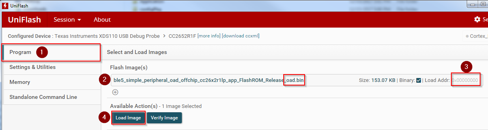

Creating a Production Image¶
A production image is an image that is ready for flashing at the factory, and to be released in a commercial OAD enabled product.
Change to Release BIM¶
By default, the projects in the SimpleLink CC13xx/CC26xx SDK will use a debug version of the BIM. This is helpful for evaluation of the TI OAD solution, but is not recommended for a production OAD build for the following reasons:
The debug configuration of BIM will not check the CRC of the image before booting. This removes a layer of redundancy in the system in favor of allowing the develop to load an OAD image straight from the IDE
The debug configuration has LED output that may not be desirable in production.
Warning
When switching to a release configuration of BIM, images loaded straight from the IDE will not run after a reset. This is expected behavior as the oad_image_tool is responsible for populating the CRC field in these images. See the Loading a Production Image section for more information.
Additionally, it may be desirable to remove the secondary device trim in the application for production images. See Device trim for more information.
Secure OAD: Change default keys¶
If you are using the secure version of OAD, new OAD keys should be generated and stored on the device. It is a security risk to use the placeholder keys that are provided with TI as these are publically available. See Generating New Security Keys (Embedded) for more information on how to generate and install new keys on the device. If using unsecure OAD, this step is not necessary.
Loading a Production Image¶
Images loaded straight from the IDE will not have a valid CRC or signature. However, the oad_image_tool will add the CRC and signature automatically at the completion of each build. Refer to Figure 89. for a diagram of the build process.
Before loading the application, be sure to load the release BIM project. This can be flash via the BIM’s hex file in UNIFLASH.
Warning
If flashing the BIM image (or a merged image containing BIM) using uniflash,
be sure that the Keep CCFG data box is not checked. (Settings &
Utilities –> Download). BIM will use a custom CCFG, so it is important that
any existing image on the device is removed. Another safeguard is the mass
erase the device before starting with OAD.
In release configurations, it is necessary to load the device using the
*_oad.bin application file that is output by the oad_image_tool using
UNIFLASH.
The binary from the tool will be placed in the build folder alongside the default
.outfile.
The address offset should be 0x0000000 as shown in the screen capture below

Note the following error is benign and can be ignored for OAD images. Verify the device has booted correctly by verifying the terminal output.